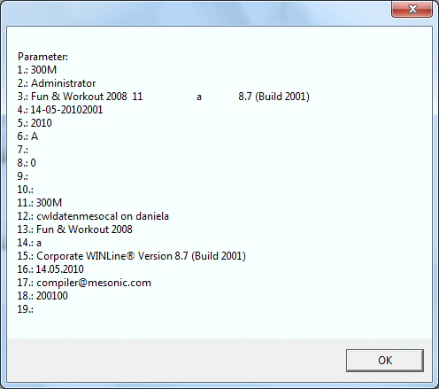

BSTR Mname
(readonly)
Enthält den Namen des Makros.
short MLastMessageResult;
(readonly)
Wird bei der Aufzeichnung verwendet und enthält jeweils das Resultat der während der Aufzeichnung ausgelösten Abfragen (z.B.: Wollen Sie speichern? JA / NEIN). Beim Abspielen des Makros wird dieser Wert verwendet, damit das Abspielen nicht durch eine Abfrage unterbrochen wird. Die Variable enthält 0 wenn keine Bildschirmmeldung aufgezeichnet wurde.
short Mchoosefile;
(readonly)
Wird bei der Aufzeichnung verwendet und enthält jeweils den angegebenen Speicherort bei einem Dateidialog (Speicherort wählen). Bei dem Abspielen des Makros werden die einzelnen Einträge nacheinander abgearbeitet.
Hinweis
Die Mchoosefile-Einträge stehen immer am Anfang des Makros und werden bei der Abfrage eines Speicherorts abgearbeitet.
VARIANT_BOOL MPrintToArchive;
(read/write)
Entspricht dem Archiv - Button in der Toolbar Leiste. Wird die Eigenschaft auf "TRUE" gesetzt, wird auch der entsprechende Button gedrückt.
VARIANT_BOOL MPrintToSpool;
(read/write)
Entspricht dem Spooler/Drucker - Button in der Toolbar Leiste. Wird die Eigenschaft auf "TRUE" gesetzt, wird auch der entsprechende Button gedrückt.
VARIANT_BOOL MBalloonHelp;
(read/write)
Entspricht dem Aktive Hilfe - Button in der Toolbar Leiste. Wird die Eigenschaft auf "TRUE" gesetzt, wird auch der entsprechende Button gedrückt.
VARIANT_BOOL MSilentMode;
(read/write)
Wird diese Eigenschaft auf "TRUE" gesetzt, dann erfolgt beim Abspielen des Makros keine sichtbare Rückmeldung, erst wenn der Modus zurückgesetzt wird, oder das Makro beendet wird, wird der Bildschirm wieder neu aufgebaut.
VARIANT MParameters;
(read only)
Diese Eigenschaft enthält ein Feld mit den an das Makro übergebenen Parametern. Im Normalfall stehen hier die Systemvariablen 1 bis 19 zur Verfügung, die die Werte des aktuell ausgewählten Mandanten wiederspiegeln.
Makros, die aus Formularen heraus (über Hyperlinks) gestartet werden, haben den Inhalt des Hyperlinkfeldes als ersten Applikationsparameter im Feld an Position 20.
Beim Starten von externen Applikationen können ebenfalls Makros hinterlegt werden, dort können zusätzliche Parameter an das Makro übergeben werden, die dann ebenfalls ab Position 20 im Feld stehen.
Damit die Feldwerte im Makro verwendet werden können, müssen sie zuerst an eine Variable zugewiesen werden.
Beispiel
Im folgenden Beispiel werden im Makro die Systemvariablen in einer Bildschirmmeldung ausgegeben:
Sub RunMacro
"" Your macro code
params = MParameters "" unbedingt notwendig um auf die Parameter
"" als Feld zugreifen zu können
CRLF = chr(13)&chr(10)
msg = "Parameter:" & CRLF
"" Der Feldwert 0 ist immer leer deshalb beginnt
"" die Schleife bei 1
For i = 1 To ubound(params)
msg = msg & i & ".: " & params(i) & CRLF
Next
"" gefundene Parameter anzeigen
msgbox msg
End Sub
